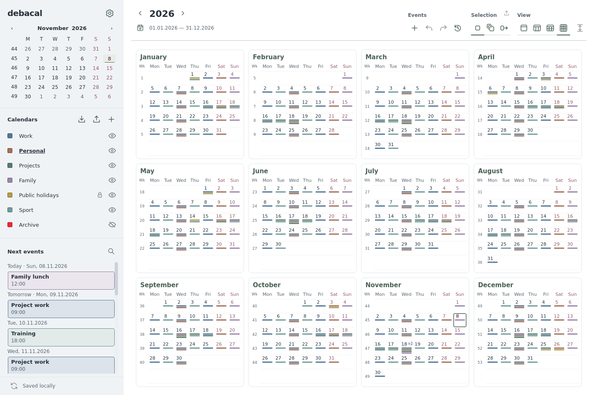
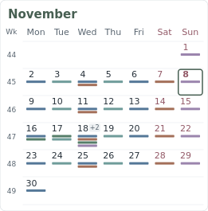
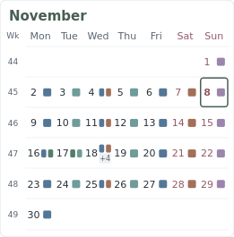
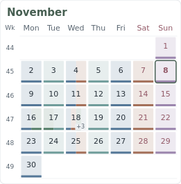

Year overview: calendar presence
Three native-widget studies for a larger, more useful indication of which calendars have events on each day. These are proposals; the app’s year view has not been redesigned yet.
WorkPersonalProjectsFamilyPublic holidaysSport

A uses broad source-colored tracks below the date. It gives each calendar more area while keeping the date and the color information separate.
Open full-size imageCompare the same month
The workshop spans 16–18 November. On 18 November, six calendars have events: crowded days show the remaining calendar count as +N. Repeated events from the same calendar still produce one indicator. The hidden Archive calendar contributes no indicator.
A · Calendar tracks

Source order stays consistent. Wide tracks are easy to scan across weeks and keep pale calendar colors visible. The date sits above the tracks.
B · Calendar tiles

Date and source marks share the row. Each calendar is a substantial colored tile, with a clear limit of four positions and a +N tile on crowded days.
C · Tinted day cells

Presence uses nearly the whole cell. Soft fills keep dates readable, while solid color edges distinguish similar calendars. This gives the year a denser, more continuous texture.
My preference: A
The tracks use the spare space directly, preserve calendar identity, and avoid putting dates over several colors. B is the clearest alternative if you prefer marks beside the dates; C gives the strongest sense of overall activity.
Shared behavior
Each indicator represents a visible calendar, not an event count or an individual selection target. Month headings and week numbers keep their navigation roles. A day can open the detailed calendar view, where individual events remain selectable.
Synthetic example data only. The desktop images use the current Debacal shell and real year-view geometry. Reproduce with QT_QPA_PLATFORM=offscreen .venv/bin/python design/2026-11-year-overview/render.py.